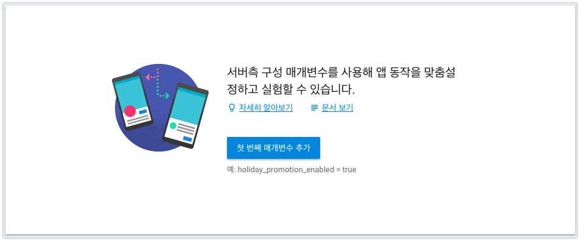

iOS앱 고도화 - Firebase Remote Config를 사용한 앱 운영방법
-읽음
Firebase Remote Config
Firebase Remote Config란, 앱 업데이트를 게시하지 않고도 앱의 동작과 모양을 변경할 수 있도록 도와주는 서비스입니다. 앱의 실행시점에 서버에서 Config를 읽어오는 비교적 쉬운 개념이지만. 이를 활용해서 다양한 응용동작을 할 수 있습니다.
비슷한 서비스로는 NHN Entertainment의 Toast Cloud - Launching이 있습니다.
- 최신 업데이트 버전을 가져와 현재 설치된 버전과 비교하여 업데이트를 유도할 수 있습니다.
- 공지사항 팝업을 띄울 수 있습니다.
- Color 값을 전달하면 앱의 전반전인 테마 컬러 변경이 가능합니다.
- static한 문구들 (연도, 전화번호)을 변경할 때 앱을 새로 빌드할 필요가 없습니다.
이 기능을 구현하려면 Config 정보를 내려줄 서버가 필요합니다. 하지만 단일 앱 개발자에게 서버는 사치죠ㅜㅠ
고맙게도 Google의 Firebase에서 이러한 기능을 제공합니다. Remote Config 라는 이름으로 위 기능을 제공하고 있습니다.
Firebase 시작하기

프로젝트 생성 후 Remote Config 시작하기를 클릭합니다.

이제 매개변수를 설정할 수 있습니다.
버전, 광고 실행 유무 등, 앱애서 사용할 매개변수들을 추가합니다.
변경사항 개시 버튼을 클릭하여 해당 내용을 배포합니다.
iOS에서 Firebase Remote Config 설정하기
GoogleService-Info.plist
iOS앱에서 Firebase에 연결하기 위해서는 GoogleService-Info.plist 가 필요하며. 이 파일은 Firebase에서 제공합니다.
Firebase에서 프로젝트를 생성합니다.

프로젝트에서 사용하고있는 Firebase 서비스의 정보를 담긴 GoogleService-Info.plist를 다운받습니다.
나중에 Cloude Message 등 다른 추가기능 사용을 선택하면 GoogleService-Info.plist 업데이트도 필요합니다.
Pod 설치
1 | pod 'Firebase/RemoteConfig' |
Podfile에 추가 후 설치합니다.
AppDelegate 설정
1 | import Firebase/RemoteConfig |
사용하고 있는 AppDelegate에 RemoteConfig 모듈을 추가합니다.
1 | func application(_ application: UIApplication, didFinishLaunchingWithOptions launchOptions: [UIApplicationLaunchOptionsKey: Any]?) -> Bool { |
didFinishLaunchingWithOptions 메소드에 Firebase.configure()를 추가하여 공유 인스턴스를 구성합니다.

fetch 과정을 통해 Firebase에 등록했던 매개변수들이 정상적으로 내려오는지 확인해봅니다.